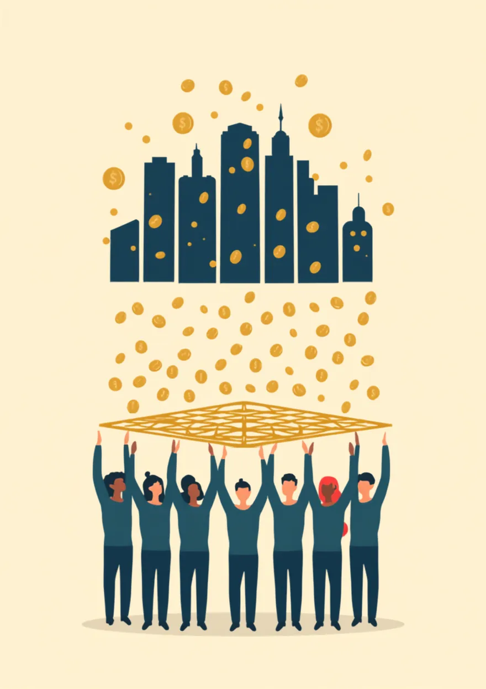
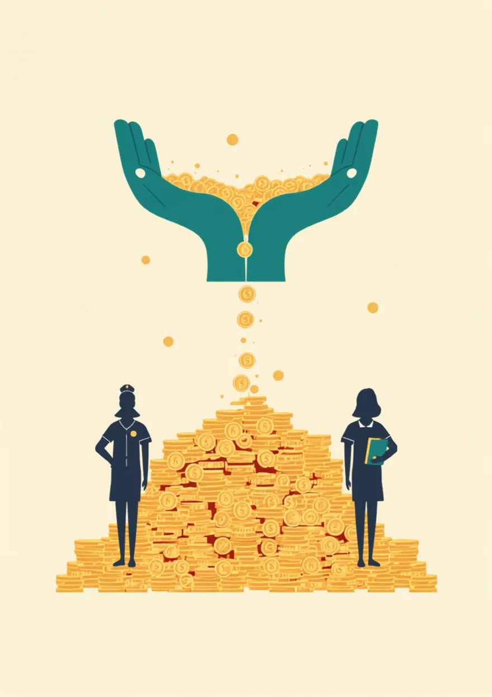
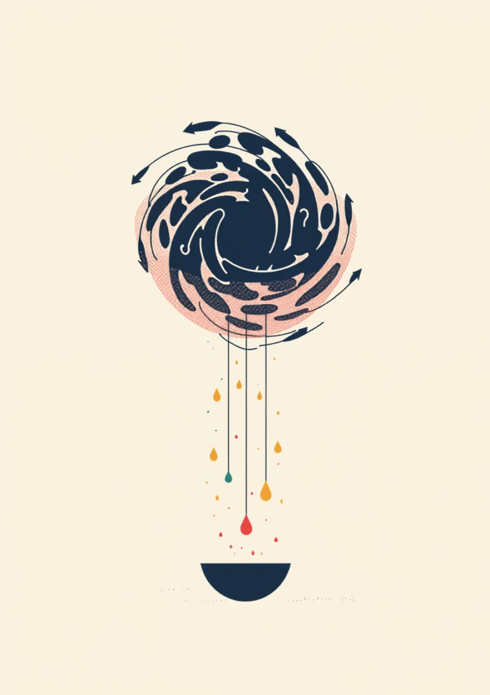
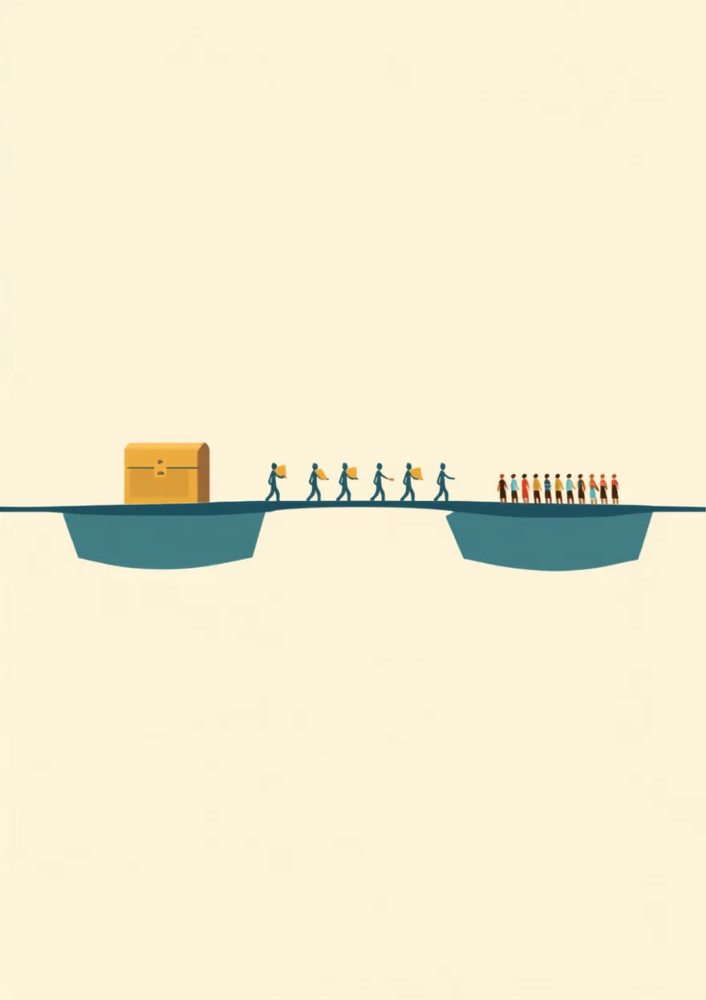
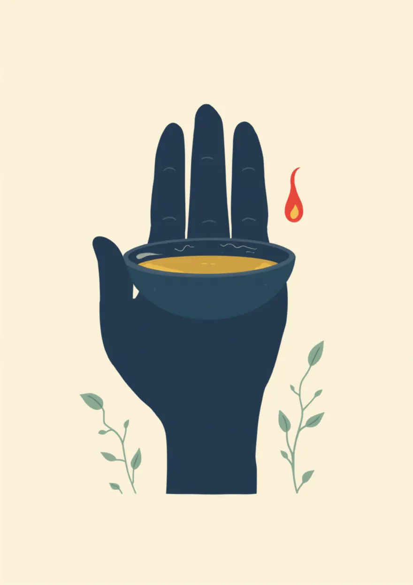
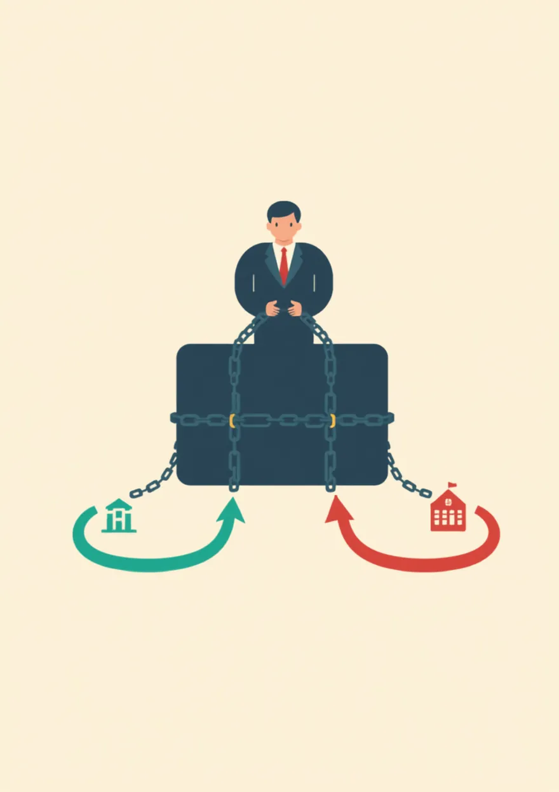
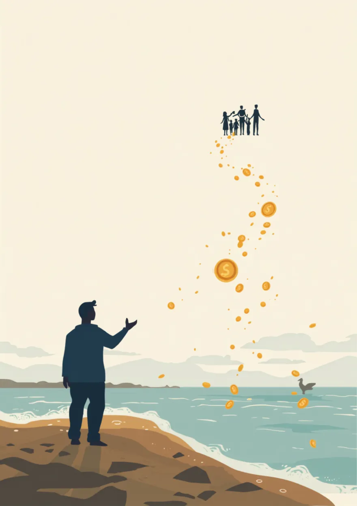
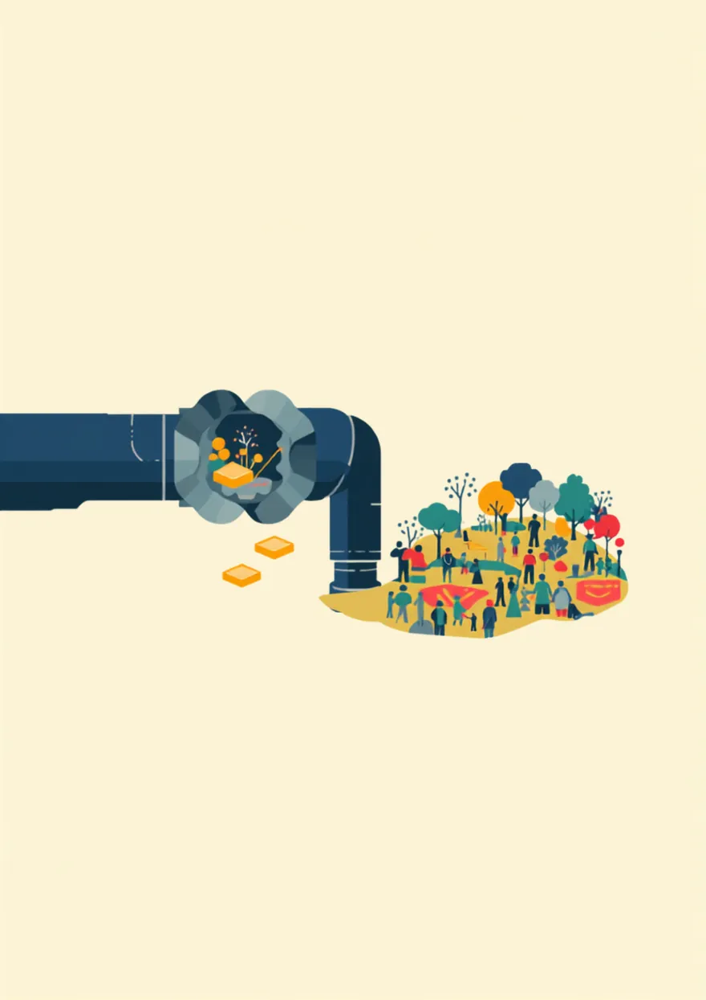

極度の貧困を撲滅する値札は、世界GDPのわずか0.3%。ではそのお金は、どこから、どうやって来るのか。経済学者や国際機関がすでに設計してきた「お金の流れを組み替える仕組み」を、図鑑の形で並べます。眺めてほしいのは細部ではなく、技術的な答えはもう出揃っているという全体の景色のほうです。
2025年末に発表された研究（UCバークレー・スタンフォード・UCサンディエゴ）によれば、1日2.15ドル未満で暮らす極度の貧困をほぼ撲滅するのに必要な資金は年間約3,180億ドル、世界GDPのわずか0.3%。世界がアルコール飲料に使う金額の約7分の1です。つまり、お金の総量はもう問題ではありません。足りていないのは、資金を届けきる仕組みと、拠出する側の政治的な意思のほうです。
幸い、その「仕組み」の候補は、すでにいくつも設計されています。このページでは、集め方を変える／届け方を変える／流れを直すの3つの群に分けて、実在する・提案されている仕組みを9つ紹介します。それぞれに、いま世界のどの段階にあるかのステータスを付けました。
奪うのではなく、「普通の人と同じ税率を、ようやく払ってもらう」ための仕組み。国際協調で、税の抜け道そのものを塞ぐ発想です。

大企業がどの国に利益を移しても、実効税率が15%を下回る分は追加で課税される「床」の仕組み。2024年に発効し、すでに世界の大企業の大半が対象です。「タックスヘイブンに逃げれば勝ち」というゲームのルール自体を変えた、国際協調の実例になりました。

世界のビリオネア約3,000人に、資産の2%を毎年の最低税として求める構想。現状、ビリオネアの実効税率は資産比0〜0.5%程度と、看護師や教師より低い水準にとどまることが示されています。「2%」は富裕層が中間層並みの負担にようやく並ぶだけの、意図的に控えめな設計です。

株式や通貨の取引に0.1%前後のごく薄い税をかける発想。日常の投資にはほぼ影響せず、投機的な超高速取引だけを狙って減速させながら税収を生むのが狙いです。英国の印紙税やフランスの金融取引税など、部分的にはすでに半世紀越しで動き始めています。
集めたお金・すでにあるお金を、中抜きも遠回りもせずに必要な人へ。届け方の発明は、この20年でもっとも研究が進んだ分野です。
物資や研修ではなく、現金をそのまま貧困世帯に渡す方法。大規模なランダム化比較試験の蓄積により「酒や怠惰に消える」という通説は覆され、栄養・就学・収入の改善が確認されています。何に使うべきかを一番知っているのは本人だという意味で、もっとも民主的な届け方でもあります。

IMFが2021年に発行した6,500億ドル分の準備資産は、制度の性質上その大半が豊かな国に配られました。使われずに眠っているその一部を低所得国へ回す枠組みで、G20は1,000億ドル超の再配分を誓約済み。ただし実際の資金化はまだ道半ばです。

豊かな国が国民総所得の0.7%を援助に充てるという、半世紀以上前の国際公約。2024年の実績は平均0.3%と、約束の半分以下にとどまっています。新しい発明ではなく、「すでにした約束を守る」だけで景色が変わる仕組みです。
新しいお金を動かさなくても、いま流れているお金の「向き」と「漏れ」を直すだけで、巨大な原資が現れます。

いま約34億人が、政府が保健や教育より借金の利払いに多くを使う国で暮らしています。返済条件の見直しや帳消しは、新しいお金を動かさずに、すでにある国家予算を人に向け直す仕組み。2000年前後の重債務貧困国の救済で実績があります。

出稼ぎ労働者が母国の家族に送るお金は年6,850億ドルと、政府援助と外国直接投資の合計を上回る規模。ところが平均6%超の手数料が途中で消えています。国連目標の3%まで下げるだけで、援助でも税でもないお金が貧しい世帯にそのまま残ります。

世界はいまも化石燃料に巨額の補助金を投じ続けています。G20は2009年に段階的な廃止で合意していますが、進んでいません。この流れの一部を付け替えるだけで、この図鑑のどの仕組みよりも大きな原資が現れる——そういう規模の話です。
ここに並べたのは、経済学者や国際機関が設計してきた「理論」と「試算」です。完成した処方箋ではありません。
「年◯億ドルで足りる」という数字は、あくまで算術上の見積もりであって、実際に世界規模で動かそうとすれば、資金が本当に末端まで届くのか、受け取る国の行政や制度が追いつくのか、課税を逃れる資本の移動をどう防ぐのか、反対する既得権をどう乗り越えるのか——ここに書ききれない不確実性がいくつもついてまわります。理論の上で成り立つことと、現実に拡張して機能させることのあいだには、まだ距離があります。だからこそ最後に「政治的意思」「社会の筋力」という話になるのだと、私自身は受け止めています。
それぞれの仕組みには、有力な反論も、専門家のあいだで決着していない論点もあります。富裕税は資本逃避を招くのではないか、現金給付は依存やインフレを生むのではないか、債務の帳消しは次の無責任な貸し借りを誘発するのではないか——こうした問いに、まだ世界は一つの答えを持っていません。この図鑑は特定の研究者の提案を多く含んでおり、反対の経済学的立場も当然に存在します。特定の政策を推すというより、「お金の総量は、もう問題ではないかもしれない」という一点に希望を見出すための入口として、並べているものです。
きづきくみたて工房は政策シンクタンクではなく、ここは思考の出発点として編んだ図鑑です。より良い仕組みや理論をご存じの方、見落としている論点や記述の誤りに気づかれた方は、ぜひお知らせください。dialogue-zukan と同じく、これも随時更新していく「未完成の図鑑」です。
この9つに共通することがあります。どれも、金融工学や税制設計としてはすでに答えが出ているということです。ビリオネア課税を設計したズックマン自身が言い切っています——「技術的な問題はすべて解決済み。残っているのは政治的意思だけだ」と。つまり、どの仕組みにも共通する最後の部品は、法律でも数式でもなく、分配の議論を分断に転化させずにやり抜く、社会の側の筋力です。
この図鑑が示すのは、貧困の解決が夢物語ではなく設計の問題だということ。ただし、どの仕組みも最後は「合意をつくり、維持する社会の筋力」にかかっています。それをどう鍛えるのかを、世界平和までのロードマップと、世界の対話の技法図鑑にまとめています。
この図鑑はまだ育っている途中です。ベーシックインカム、土地税、ソブリン・ウェルス・ファンド——ここに載せきれていない仕組みや、より確かな理論をご存じでしたら、ぜひ教えてください。